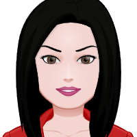
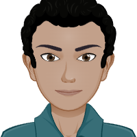
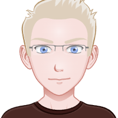

Qui sommes nous ?
Bienvenue dans le monde innovant de notre équipe ! Nous sommes un groupe de six étudiants et déterminés qui se sont réunis pour relever un défi passionnant : développer une puce connectée révolutionnaire dédiée à la surveillance de la santé des animaux de la ferme.
Notre Équipe :
BASSEMAYOUSSE--POTTIER Vincent - Chef de projet
Vincent dirige une notre équipe dédiée à la création d'une puce sous-cutanée révolutionnaire destinée à surveiller la santé des animaux de la ferme. Sa mission consiste à développer des solutions innovantes pour améliorer la conception d'AgroChip.

BRANDON Gwenaëlle - Assistante projet
Gwenaëlle est l'assistante de projet qui joue un rôle central dans la conception de la puce. Elle orchestre les diverses facettes du projet avec Vincent, assurant une convergence fluide des idées innovantes vers des solutions tangibles. Elle travaille également sur le développement du site Web.
LIESKE Kevin - Ingénieur Développeur
Kevin assure la connectivité fluide de notre puce avec les systèmes de gestion des données. En plus de ses compétences en programmation, il joue également un rôle clé dans la gestion commerciale, établissant des partenariats et assurant la réussite du déploiement commercial.

RABARISON Cédric - Ingénieur Développeur
Cédric est l'esprit brillant derrière la conception et la mise en œuvre de la puce sous-cutanée. Il développe l'application permettant à l'utilisateur un suivie en direct et est le graphiste de l'équipe à ses heures perdues.
GANTSUI Clarke - Ingénieur Electronicien
Clark est notre génie électronique. Avec ses compétences pointues, il travaille sur le développement des capteurs de pointe nécessaires à la collecte précise des données de santé animale. Il orchestre également la communication au sein de l'équipe et avec les parties prenantes externes.

DE FELICE Enzo - Ingénieur Développeur
Enzo est responsable de l'analyse approfondie des données collectées. Grâce à son expérience en intelligence artificielle, il développe des modèles permettant de détecter rapidement les signes précurseurs de problèmes de santé chez les animaux.
Notre Objectif :
Le but ultime de notre projet est de faciliter la surveillance continue de la santé des animaux de la ferme grâce à une puce connectée intelligente. En combinant l'expertise multidisciplinaire de notre équipe, nous aspirons à créer une solution innovante qui contribuera à améliorer la gestion des troupeaux, à prévenir les maladies et à promouvoir le bien-être animal. Rejoignez-nous dans cette aventure où la technologie et la passion pour la santé animale se rencontrent pour façonner l'avenir de l'agriculture durable.